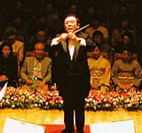
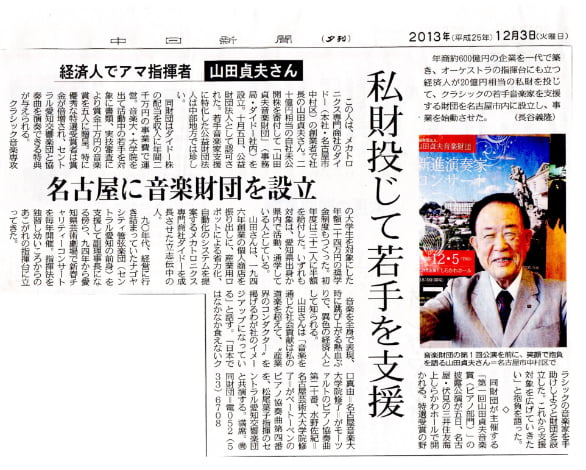

ABOUT 山田貞夫音楽財団について
GREETING ご挨拶
山田貞夫音楽財団は、平成24年11月に山田貞夫会長のクラッシック音楽への情熱から誕生しました。会長は戦後の辛く大変な時代を、ベートーヴェンの交響曲に勇気づけられ乗り越えられたそうです。夢も希望も持てず、食べるものすらないにもかかわらず、音楽に合わせ自然に体が動き、まるで指揮をしているようであったと聞いております。
一方、私は、有難い事に平穏な時代に育ちましたが、私にもクラッシック音楽との出会いがございました。それは、子供時代に習っておりましたクラッシックバレエです。 バレエは喜び、悲しみ、幸せ、怒りなどあらゆる感情を踊りで表現をするのですが、音楽を耳にするとまるで魔法にかかった様に、身体が動きだした事を覚えております。 歴史ある素晴らしい楽器の音色は、人々の身体中に染み渡り、平穏な時代も、不穏な時代も何百年も私達を癒し、励ましてくれています。
このような大切な音楽を学ぶ皆様のご活躍を少しでも支援し、クラッシックファンの皆様、また、これからファンになられる皆様と一緒に、迫力あるオーケストラ演奏を劇場で堪能できましら、大変嬉しい所存でございます。
財団の活動について、今後とも皆様のご理解ご協力を賜りますよう、お願い申し上げます。

BUSINESS 事業内容
01.新進演奏家コンクール開催
将来有望な新人クラシック音楽家に対し、一人当たり10万円の山田貞夫音楽賞を贈り、その活動を助成します。また、特選に選ばれた方は、セントラル愛知交響楽団と協奏曲を協演していただきます。
02.指揮者オーディションの開催
愛知県内で演奏経験のある指揮者に対しその活動を支援するオーディションです。
また、愛知県の文化・芸術の振興に寄与しています。
03.クラシック音楽を専攻する在学生に対する奨学金の給付
愛知県所在の音楽大学またはその大学院の在学生、または愛知県出身者で、クラシック音楽を専攻する音楽大学またはその大学院の在学生に対し、月額3万円(年額36万円）の奨学金を給付しています。
04.コンサートの開催
新進演奏家コンクール 特選受賞者や指揮者オーディション 受賞者とオーケストラの協演を実現いたします。
また、愛知県民の文化活動に対する意欲の向上を図ることを目的にコンサートを開催いたします。

OVERVIEW 概要
| 名称 | 公益財団法人 山田貞夫音楽財団 |
|---|---|
| 代表理事 | 田中真紀代 |
| 会長 | 山田貞夫 |
| 理事 | 荻原栄助 長縄雅男 本多秀朗 中西政男 松本ケイ子 岩田健嗣 加納良恭 大村真梨 |
| 評議員 | 山田弘子 郷睦和 牧野克則 小西洋一 近藤克義 村瀬英治 |
| 監事 | 法月二三夫 竜嶽一己 |
| 所在地 |
〒450-0003 名古屋市中村区名駅南4-12-19 ダイドー株式会社内 |
| 連絡先 |
TEL：052-533-6708 FAX：052-533-6728 MAIL：zaidan@daido-net.co.jp |
| 設立 | 平成24年11月 |
沿革
| 平成24年11月 | 一般財団法人として設立 |
|---|---|
| 平成25年10月 | 公益財団法人として認定 |
設立への想い
私、山田貞夫とクラシック音楽との出会いは、少年時代。
母を失い父とも別れて過ごしていた頃、友人宅で聴いたSP盤のベートーベンの交響曲に勇気づけられました。それ以来、音楽を糧に困難を乗り越えてきました。私の体感したクラシック音楽の持つ力、素晴らしさをぜひ多くの方に知っていただきたいと願っています。
日本が復興するとともに、文化芸術の水準も高まってきましたが、日本のクラシック音楽をとりまく環境は厳しく必ずしも充分な支援体制があるとは言えません。
公益財団法人山田貞夫音楽財団はクラシック音楽の振興並びに音楽文化水準の向上に微力ながら貢献するため活動してまいる所存です。
今後ともご理解とご協力を賜りますようお願い申し上げます。

2013年12月3日 中日新聞掲載記事
